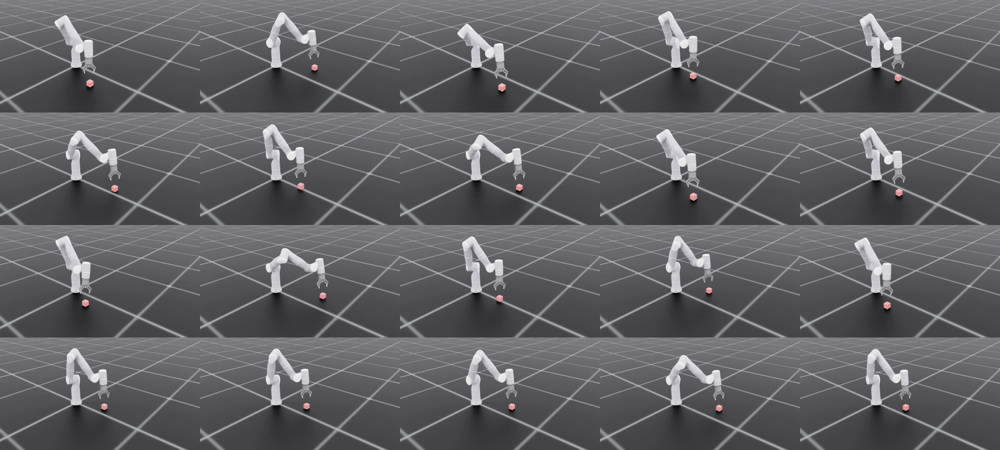

Flexiv Rizon 4 Cartesian Reach with PPO
Built and validated a position-only reinforcement-learning pipeline that drives a Flexiv Rizon 4 tool center point to a stable hover 15 cm above a randomized object position in Isaac Sim.
Project Overview
This project was designed as a minimal end-to-end integration test for robot learning: simulator environment, PPO training, differential inverse kinematics, controller-health validation, and repeatable visual evaluation. The policy moves the two-finger gripper's tool center point (TCP) to 15 cm directly above the center of a stationary cube, regardless of the cube's sampled XY position.
The learned policy does not output arm-joint angles directly. It emits incremental wrist translation, wrist rotation, and finger commands at 20 Hz. Those commands update an accumulated task-space target, and Pink differential IK converts that target into bounded joint-position commands for the simulated Flexiv Rizon 4.
Position-Only Goal
Reach the target and remain strictly within 20 mm for every sample in the final one-second hold window. The task intentionally avoids contact and grasp dynamics so the complete learning and control stack can be validated before progressing to manipulation.
Held-Out Evaluation
The video combines 20 sequential evaluations from the selected model_400 checkpoint. Each episode uses a distinct held-out cube position and the same policy, observation contract, Pink controller, velocity limits, and health instrumentation used for quantitative evaluation. All 20 recorded episodes pass the position and controller-health gates.

Quantitative Results
The reported Gate 2 evaluation covers 500 held-out positions across five seeds. Success requires all 20 final control samples to stay below the 20 mm TCP-error threshold, not merely a low average error.
Position Accuracy
- 495 / 500 = 99.0% success
- Wilson 95% CI: 97.7% - 99.6%
- Mean terminal-window error: 8.02 mm
- P90 terminal-window error: 13.6 mm
Convergence
- Mean settling time: 36.7 steps (1.84 seconds)
- All 500 episodes entered tolerance at least once
- Recorded set: 20 / 20 position passes
- Final one-second window defines success
Controller Health
- 0 external-contact steps
- 0 IK failures
- 0 non-finite Jacobians
- Minimum joint margin: 0.142 rad
Learning and Control Stack
Versioned observation contract
Four frames of joint position and velocity, accumulated wrist and finger targets, measured wrist pose, finger state, and object center form a 136-dimensional observation. Fixed physical divisors are applied before history insertion, with no learned normalization and no privileged critic inputs.
Accumulated task-space actions
The PPO actor produces seven deltas: wrist XYZ, wrist roll-pitch-yaw, and finger motion. The commands are integrated into a target at 20 Hz instead of being interpreted as absolute poses.
Pink differential inverse kinematics
Pink solves the accumulated SE(3) wrist target into seven arm-joint commands. URDF position and velocity limits constrain the QP, followed by a command-to-command slew limiter and Isaac Sim position drives.
Fail-closed evaluation
Per-episode metrics cover terminal accuracy, joint margin, actual and commanded speed, external contact, IK failures, Jacobian finiteness, manipulability, settling time, and finger behavior. Unavailable health measurements fail rather than silently becoming zero.
Engineering Highlights
PPO Telemetry
- Adaptive-KL distribution logging
- Static field-wise observation scaling
- Checkpoint contract-version validation
- Per-field non-finite detection
Command Safety
- URDF joint-position alignment
- QP velocity constraints
- Command slew limiting
- Actual vs commanded speed reporting
Verification
- 215 offline tests
- Positive collision-sensor validation
- Positive slew-limiter validation
- Per-episode video and JSON evidence
Technologies Used
Current Scope and Open Work
This result is deliberately scoped to simulation and position variation. The evaluated object is a stationary 6 cm cube with randomized XY position, fixed orientation, and a simulator-provided center. Shape and size generalization, camera-based object perception, geometric-clearance measurement, multiple robot initial configurations, grasp contact, and real Flexiv RDK deployment are not demonstrated yet.
The position objective and controller-health gates pass. The auxiliary finger target does not: the recorded policy settles near the gripper's upper stop, so finger_passed=false and the combined full-policy verdict remains false. This is reported separately rather than hidden behind the successful Cartesian reach metric.
Project Resources
The repository contains the environment, PPO configuration, Pink controller, evaluation scripts, tests, detailed engineering notes, and reproducible visual evidence.